1 Atomic structure
Particles, isotopes, electronic structure and ionisation energy
1 Atomic structure
本章对应 CIE 9701 2025–2027 syllabus 的 1.1–1.4 Atomic structure。内容覆盖 subatomic particles、isotopes、electron shells and orbitals，以及 first and successive ionisation energies。
Learning objectives
学完本章后，你应该能够：
- describe the relative charge, relative mass and location of protons, neutrons and electrons;
- use atomic number, nucleon number and ionic charge to calculate numbers of protons, neutrons and electrons;
- define isotopes and explain why isotopes have similar chemical properties but slightly different physical properties;
- write full electronic configurations and use orbital box notation;
- describe the shapes and orientations of s and p orbitals;
- define first ionisation energy and write ionisation-energy equations with state symbols;
- explain periodic trends and anomalies in first and successive ionisation energies.
1.1 Particles in the atom and atomic radius
Subatomic particles
An atom contains a small, dense nucleus surrounded by electrons. The nucleus contains positively charged protons and neutral neutrons; electrons are negatively charged and occupy regions of space described as shells and orbitals.
| Subatomic particle | Relative charge | Relative mass | Location |
|---|---|---|---|
| proton | \(+1\) | \(1\) | nucleus |
| neutron | \(0\) | \(1\) | nucleus |
| electron | \(-1\) | \(\frac{1}{1836}\) | outside the nucleus |
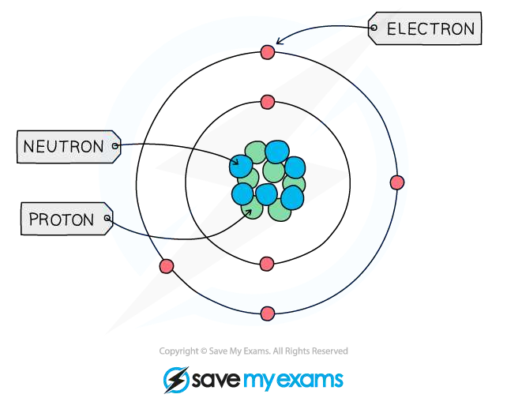
The nucleus is very small compared with the atom, but it contains almost all of the atom’s mass. Most of the volume of an atom is empty space occupied by the electron cloud.
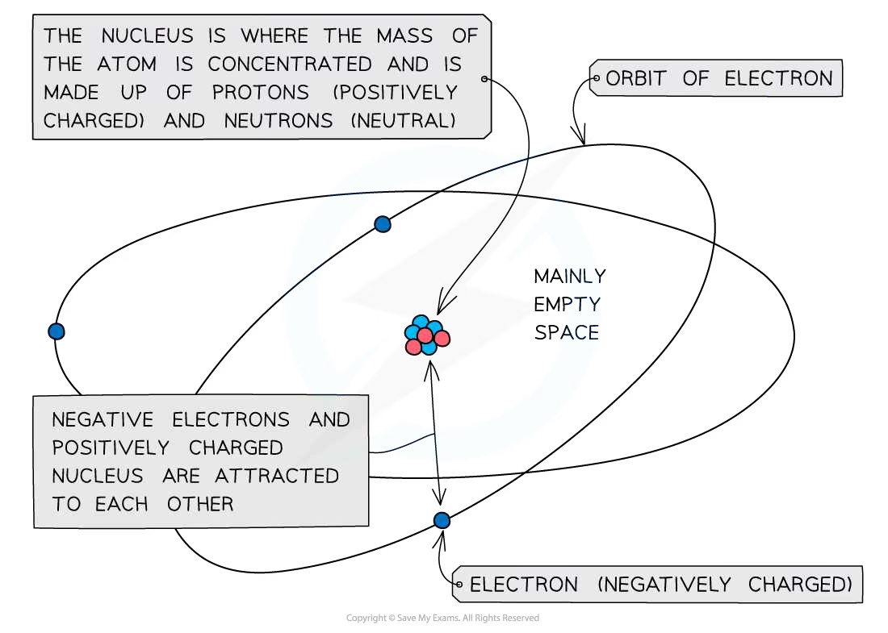
Atomic number, nucleon number and atomic radius
The atomic number, \(Z\), is the number of protons in the nucleus. It identifies the element. The nucleon number, \(A\), is the total number of protons and neutrons:
\[A = Z + \text{number of neutrons}\]
For a neutral atom, the number of electrons equals the number of protons. For an ion, adjust the number of electrons for the charge:
- a \(+1\) ion has one fewer electron than the neutral atom;
- a \(2-\) ion has two more electrons than the neutral atom.
Atomic radius generally decreases across a period because nuclear charge increases while electrons are added to the same shell. The stronger attraction pulls the outer electrons closer to the nucleus. Atomic radius increases down a group because an additional occupied shell is added.
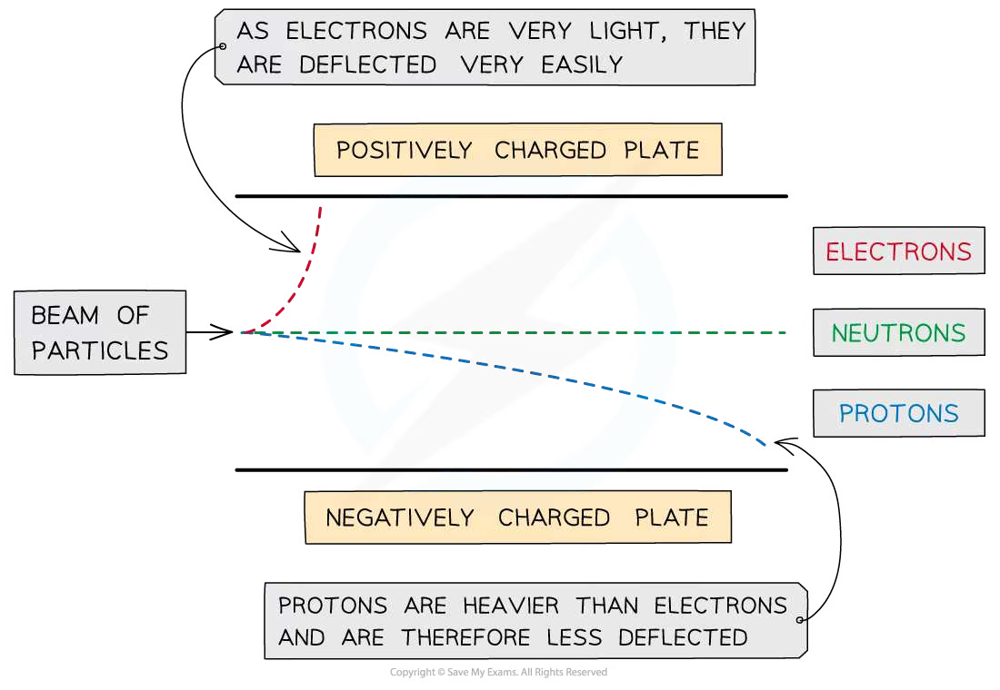
Worked example · Note knowledge check
Counting subatomic particles
Calculate the numbers of protons, neutrons and electrons in \(^{32}_{15}\mathrm{P}^{3-}\), and state the electronic configuration of the ion.
The atomic number is 15, so there are 15 protons.
\[\text{neutrons}=32-15=17\]
The \(3-\) charge means that three electrons have been gained:
\[\text{electrons}=15+3=18\]
The ion has the same number of electrons as argon:
\[\boxed{1s^2\,2s^2\,2p^6\,3s^2\,3p^6}\]
1.2 Isotopes
Definition and properties of isotopes
Isotopes are atoms of the same element with the same number of protons but different numbers of neutrons. They therefore have the same atomic number but different nucleon numbers.
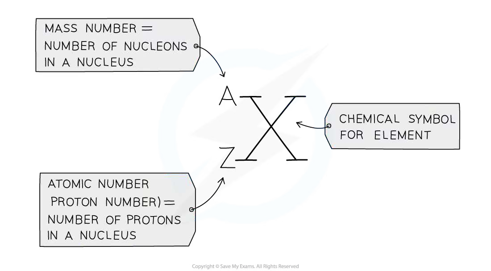
Because isotopes of an element have the same number of electrons and the same electron configuration, they have the same chemical properties. Their different numbers of neutrons give different masses, so they can have slightly different physical properties such as density, melting point and boiling point.
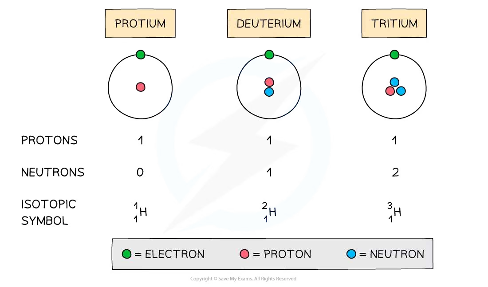
Ions, isotopes and free radicals
An ion has a net charge because the number of electrons is different from the number of protons. This is different from an isotope, where the difference is in the number of neutrons.
A free radical is an atom or group of atoms with one or more unpaired electrons. Free radicals are highly reactive. For example, homolytic fission of chlorine under ultraviolet light produces chlorine radicals:
\[\ce{Cl2 ->[UV] 2Cl^.}\]
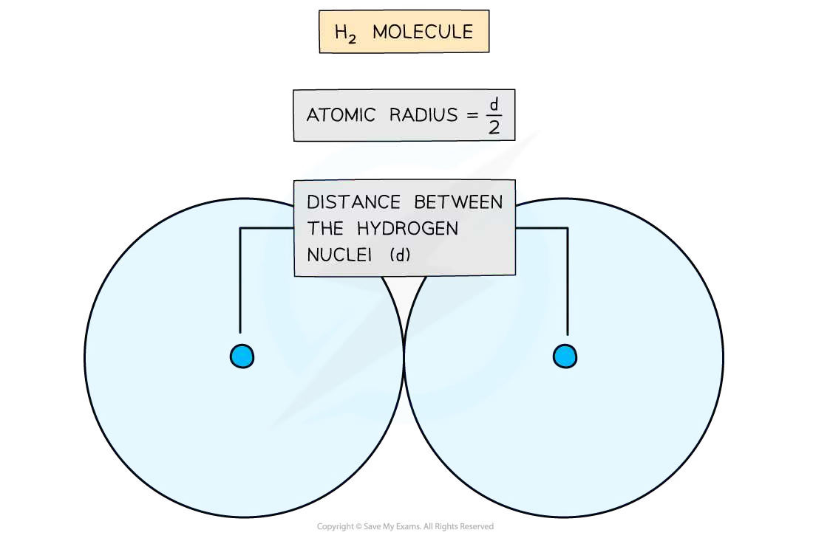
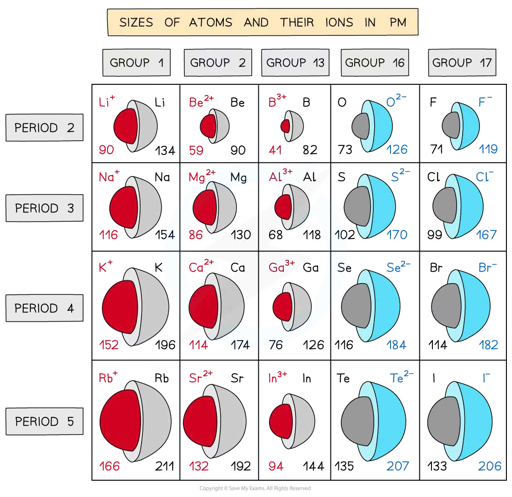
Worked example · Note definition check
Comparing isotopes
Explain why \(^{35}\mathrm{Cl}\) and \(^{37}\mathrm{Cl}\) have similar chemical properties but different physical properties.
They are isotopes, so they have the same number of protons and the same number of electrons. Their electron configurations are therefore identical, and chemical reactions depend mainly on the outer electrons.
They have different numbers of neutrons and therefore different masses. This produces small differences in physical properties such as density and boiling point.
1.3 Electrons, energy levels and atomic orbitals
Shells, subshells and orbitals
Electrons occupy principal energy levels, or shells, numbered \(n=1,2,3,\ldots\). Each shell contains subshells. The subshells used at AS Level are \(s\), \(p\) and, for transition elements, \(d\).
| Subshell | Number of orbitals | Maximum electrons | Shape |
|---|---|---|---|
| \(s\) | 1 | 2 | spherical |
| \(p\) | 3 | 6 | three dumbbell-shaped orbitals |
| \(d\) | 5 | 10 | five orbitals |
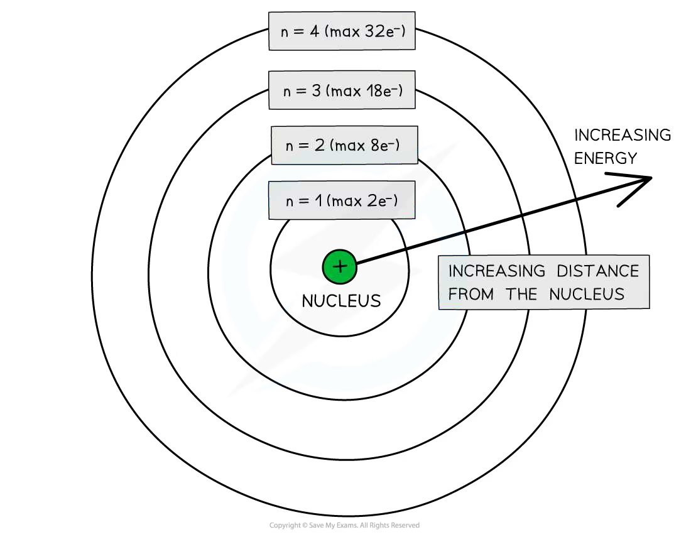
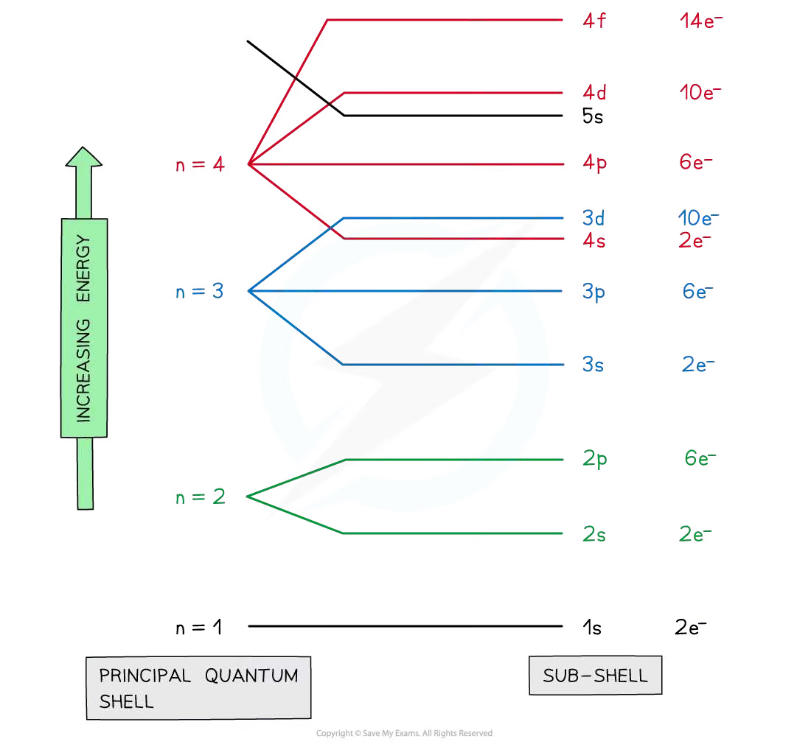
The three p orbitals are oriented at right angles to one another and are labelled \(p_x\), \(p_y\) and \(p_z\).
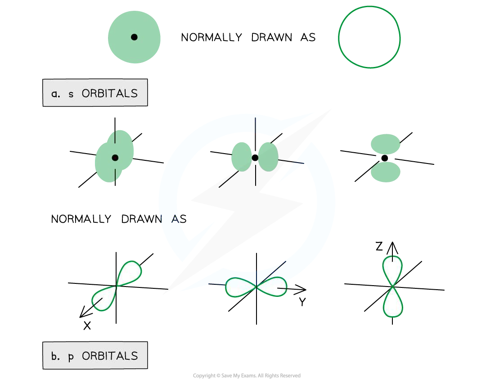
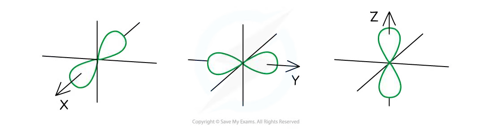
Filling orbitals and writing configurations
Electrons fill the lowest available energy orbitals first. An orbital can contain a maximum of two electrons, which must have opposite spins. In a set of degenerate orbitals, electrons occupy separate orbitals before pairing.
The usual order for the first few subshells is:
\[1s < 2s < 2p < 3s < 3p < 4s < 3d < 4p\]
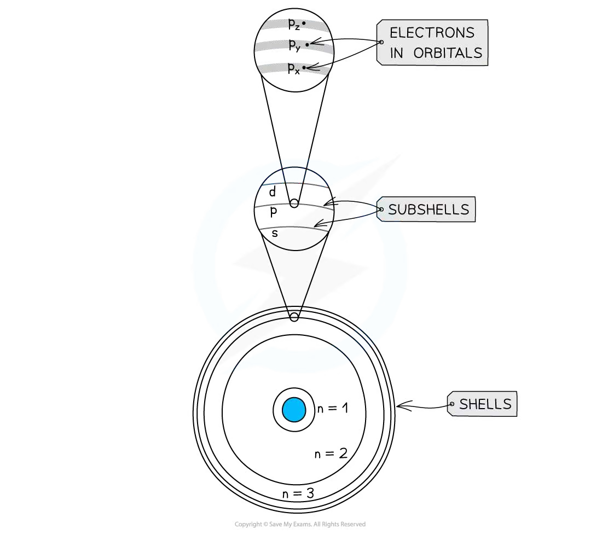
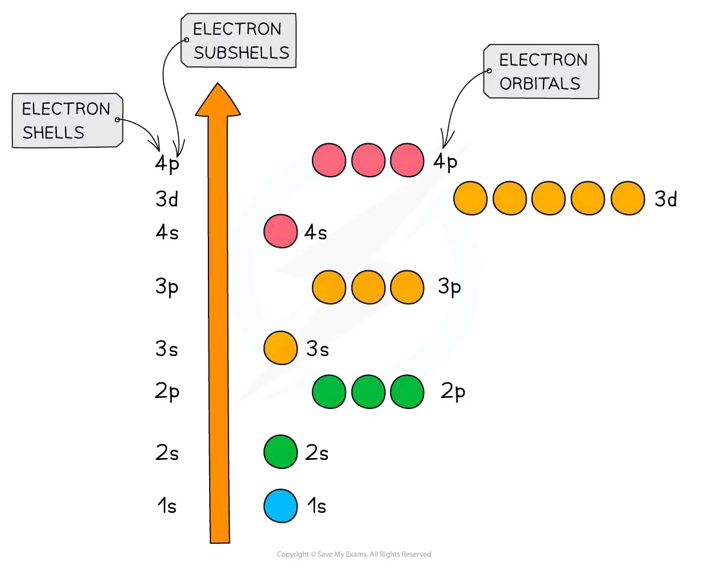
For example:
\[\ce{Na}:1s^2\,2s^2\,2p^6\,3s^1\]
\[\ce{Cl^-}:1s^2\,2s^2\,2p^6\,3s^2\,3p^6\]
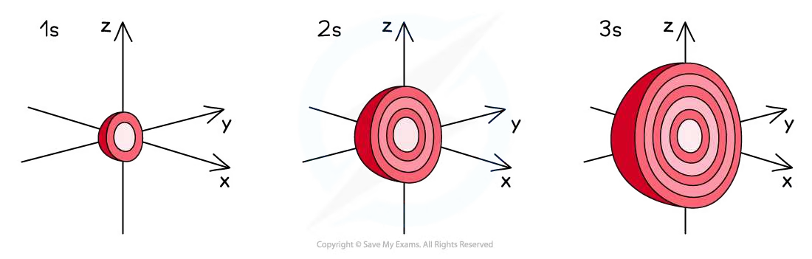
Transition-metal configurations and ions
For transition-metal atoms, the \(4s\) subshell is filled before \(3d\), but the \(4s\) electrons are removed first when positive ions form. For example:
\[\ce{Sc}: [Ar]4s^2 3d^1\]
\[\ce{Sc^{2+}}: [Ar]3d^1\]
The chromium and copper atoms are exceptions to the simple filling pattern because half-filled or completely filled \(3d\) subshells are more stable:
\[\ce{Cr}: [Ar]4s^1 3d^5\]
\[\ce{Cu}: [Ar]4s^1 3d^{10}\]
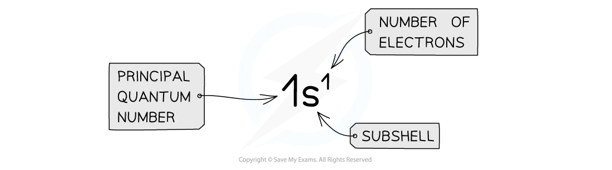
Worked example · Note electron configuration
Writing configurations and box notation
Give the full electronic configurations of \(\ce{K+}\), Ti and Co.
Potassium has atomic number 19. Removing one electron gives:
\[\ce{K+}:1s^2\,2s^2\,2p^6\,3s^2\,3p^6\]
Titanium has 22 electrons:
\[\ce{Ti}:1s^2\,2s^2\,2p^6\,3s^2\,3p^6\,4s^2\,3d^2\]
Cobalt has 27 electrons:
\[\ce{Co}:1s^2\,2s^2\,2p^6\,3s^2\,3p^6\,4s^2\,3d^7\]
1.4 Ionisation energy
First ionisation energy
The first ionisation energy is the enthalpy change required to remove one mole of electrons from one mole of gaseous atoms to form one mole of gaseous \(1+\) ions.
The equation for the first ionisation energy of magnesium is:
\[\ce{Mg(g) -> Mg+(g) + e-}\]
Ionisation energy is always endothermic because energy is needed to overcome the attraction between the nucleus and the electron being removed.
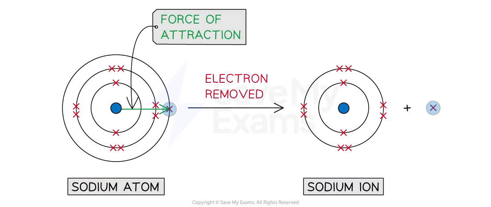
Trend across a period and down a group
First ionisation energy generally increases across a period because:
- nuclear charge increases as proton number increases;
- electrons are added to the same principal shell, so shielding is similar;
- atomic radius decreases and the attraction between the nucleus and the outer electron increases.
First ionisation energy generally decreases down a group because the outer electron is in a higher shell, farther from the nucleus, and more shielded by inner electrons. The increase in nuclear charge is outweighed by the greater distance and shielding.
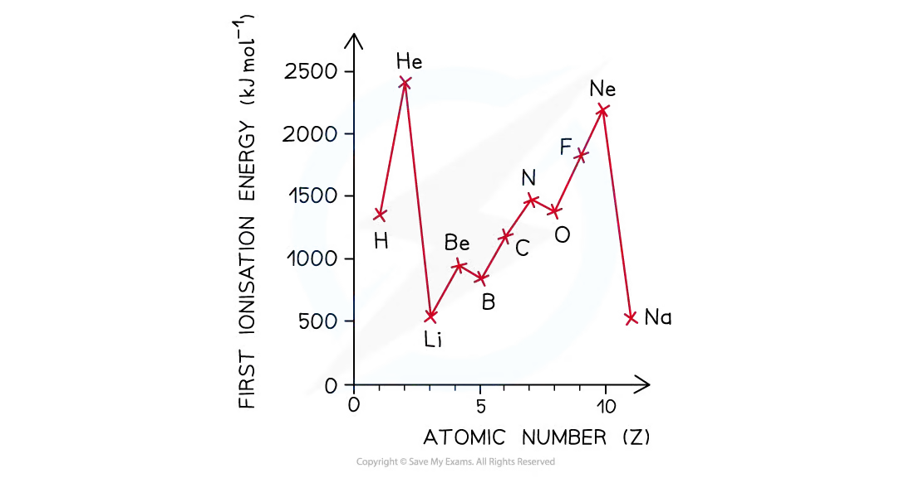
Successive ionisation energies and anomalies
Successive ionisation energies increase because each electron is removed from an increasingly positive ion. A large jump shows that the next electron is being removed from an inner shell. The number of electrons removed before the large jump indicates the number of outer-shell electrons and therefore the group.
The small anomalies across Period 3 are important:
- aluminium is lower than magnesium because the electron removed from Al is in the higher-energy, more shielded \(3p\) subshell rather than \(3s\);
- sulfur is lower than phosphorus because sulfur has a pair of electrons in one \(3p\) orbital, so electron–electron repulsion makes one electron easier to remove.
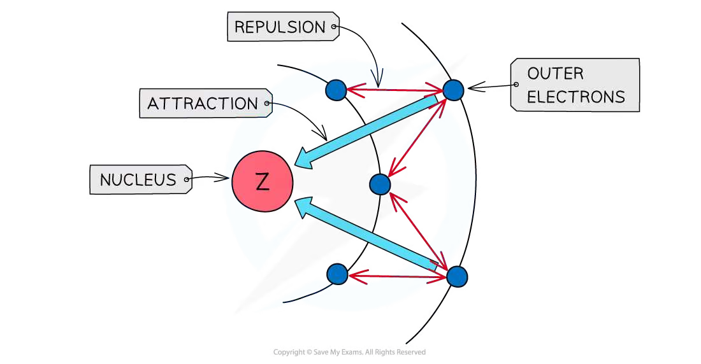
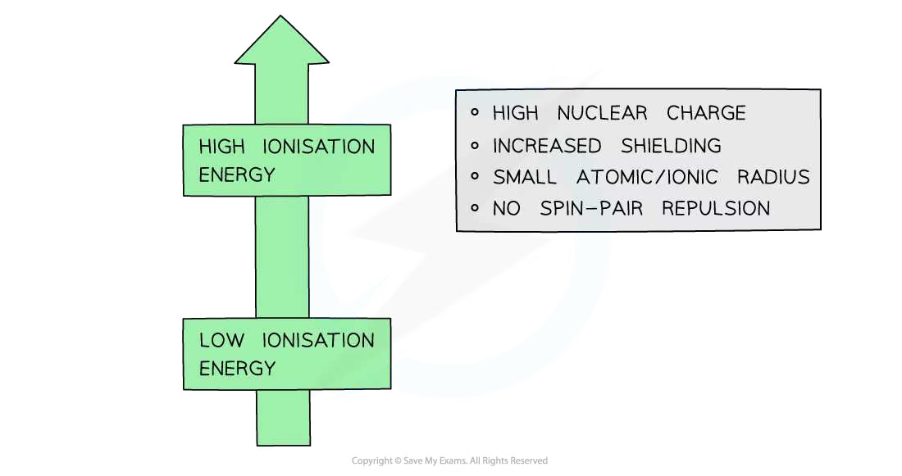
Worked example · Note ionisation-energy calculation
Interpreting successive ionisation energies
The successive ionisation energies of an element are 950, 1800, 2700, 4800, 6000 and 12 300 kJ mol\(^{-1}\). Deduce the group of the element and explain your answer.
There is a large jump between the fifth and sixth ionisation energies. The first five electrons are therefore in the outer shell, while the sixth electron is removed from an inner shell.
The element has five outer-shell electrons and is in Group 15 (Group 5 in the older notation).
Worked example · Note periodic trend
Explaining an anomaly
Explain why the first ionisation energy of aluminium is lower than that of magnesium.
Magnesium loses an electron from the \(3s\) subshell, whereas aluminium loses an electron from the \(3p\) subshell. The \(3p\) electron is at a higher energy and is slightly more shielded, so it is easier to remove. Therefore aluminium has the lower first ionisation energy.
Chapter checklist
Multiple choice questions
1.1 Atomic Structure - Multiple Choice: Easy
Question 1 · Atomic theory · 1.1 Choice Easy Q1
Which statement from Dalton’s atomic theory is still considered correct today?
Show explanation
B. Atoms are extremely small, but they contain subatomic particles and isotopes exist.
Question 2 · The H₃⁺ ion · 1.1 Choice Easy Q2
The reaction \(\ce{H2(g) + H2+(g) -> H(g) + H3+(g)}\) occurs in gas clouds. What is the composition of \(\ce{H3+}\)?
Show explanation
B. Three hydrogen nuclei give three protons and no neutrons; the \(+1\) charge means two electrons remain.
Question 3 · Atomic, proton and mass numbers · 1.1 Choice Easy Q3
Which row is correct?
| Atomic number is the number of | Proton number is the number of | Mass number is the number of | |
|---|---|---|---|
| A | atoms | protons | protons |
| B | electrons | neutrons | nucleons |
| C | electrons | neutrons | protons |
| D | protons | protons | nucleons |
Show explanation
D. Atomic number and proton number are the number of protons; mass number is the number of nucleons.
Question 4 · Subatomic particles in \(^{32}_{15}\ce{P^{3-}}\) · 1.1 Choice Easy Q4
What is the composition of the phosphide ion \(^{32}_{15}\ce{P^{3-}}\)?
| Protons | Neutrons | Electrons | |
|---|---|---|---|
| A | 15 | 17 | 32 |
| B | 15 | 17 | 18 |
| C | 17 | 15 | 15 |
| D | 17 | 15 | 32 |
Show explanation
B. Protons \(=15\), neutrons \(=32-15=17\), and the \(3-\) charge gives \(15+3=18\) electrons.
Question 5 · Relative charge and mass · 1.1 Choice Easy Q5
Which option correctly describes the relative charges and masses of the subatomic particles?
| Proton | Neutron | Electron | Relative mass of an electron | |
|---|---|---|---|---|
| A | +1 | 0 | −1 | 1 |
| B | 0 | +1 | +1 | \(\frac{1}{1840}\) |
| C | +1 | 0 | −1 | \(\frac{1}{1840}\) |
| D | 0 | +1 | −1 | 1 |
Show explanation
C. Protons are \(+1\), neutrons are neutral, electrons are \(-1\), and an electron has a relative mass of about \(1/1840\).
Question 6 · Particles in an electric field · 1.1 Choice Easy Q6
The trajectories of protons, neutrons and electrons in an electric field are shown below. Which diagrams are correct?
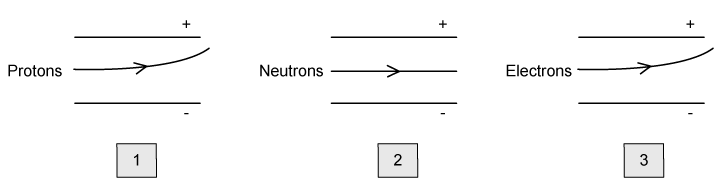
Show explanation
A. Neutrons are undeflected; electrons bend towards the positive plate; the proton diagram must bend towards the negative plate.
1.1 Atomic Structure - Multiple Choice: Medium
Question 1 · Particle counts · 1.1 Choice Medium Q1
In which species are the numbers of protons, neutrons and electrons all different?
Show explanation
A. \(^{23}\ce{Na+}\) has 11 protons, 12 neutrons and 10 electrons.
Question 2 · Why atoms are neutral · 1.1 Choice Medium Q2
Which statement explains why atoms are electrically neutral?
Show explanation
B. A neutral atom has equal numbers of protons and electrons, whose charges are equal in magnitude and opposite in sign.
Question 3 · Metallic radius down Group 1 · 1.1 Choice Medium Q3
Which statements correctly describe the trend in metallic radius from Na to Rb?
- It increases moving down the group.
2. It increases because extra electron shells are added.
3. It decreases because nuclear forces increase.
Show explanation
C. Each step down adds an occupied shell, increasing the distance of the outer electron from the nucleus.
Question 4 · Distribution of mass and charge · 1.1 Choice Medium Q4
Which statements correctly describe the distribution of mass and charge in an atom?
- Negative charge is concentrated in one area outside the nucleus.
2. Mass is concentrated inside the nucleus.
3. Negative charge is spread around outside the nucleus.
Show explanation
C. Nearly all mass is in the small nucleus, while the electron charge is distributed through the space around it.
Question 5 · Unpaired electrons · 1.1 Choice Medium Q5
There are six unpaired electrons in atoms of element Z. What could element Z be?
Show explanation
D. Chromium is \([\ce{Ar}]4s^1 3d^5\), giving six unpaired electrons.
Question 6 · Second ionisation energy of magnesium · 1.1 Choice Medium Q6
The second ionisation energy of magnesium is \(1451\ \mathrm{kJ\ mol^{-1}}\). Which equation represents this statement?
Show explanation
B. The second electron is removed from \(\ce{Mg+}\), and ionisation is endothermic.
Question 7 · Orbital shapes and orientations · 1.1 Choice Medium Q7
The diagram shows three orbitals labelled 1, 2 and 3. What is the correct label for each orbital?
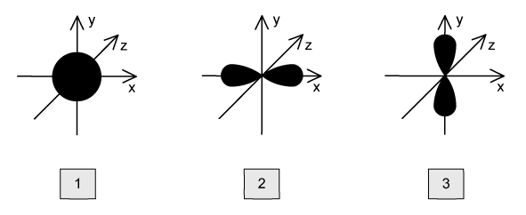
Show explanation
D. Orbital 1 is spherical (\(s\)); orbitals 2 and 3 point along the \(x\)- and \(y\)-axes respectively.
1.1 Atomic Structure - Multiple Choice: Hard
Question 1 · Isoelectronic radii · 1.1 Choice Hard Q1
The species \(\ce{Cl-}\), \(\ce{K+}\) and Ar are isoelectronic. In which order do their radii decrease?
Show explanation
B. With the same number of electrons, the species with more protons has the stronger attraction and smaller radius.
Question 2 · Deflection in an electric field · 1.1 Choice Hard Q2
The trajectories of subatomic particles moving at the same velocity are shown. Which statements are correct?
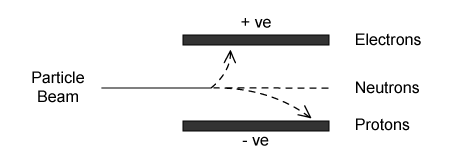
- The proton and electron are deflected because they are charged.
2. Neutrons are undeflected because they have no charge.
3. Electrons are deflected more than protons because they have less mass.
Show explanation
A. Charged particles are deflected; neutrons are not, and the much smaller electron mass gives a greater deflection.
Question 3 · Atomic radius across Period 3 · 1.1 Choice Hard Q3
Why does atomic radius decrease across Period 3?
- Electron shells are added across the period, increasing nuclear attraction.
2. Nuclear charge increases as atomic number increases.
3. There is a greater attraction between the nucleus and the electrons.
Show explanation
C. Electrons are added to the same shell, not new shells; nuclear charge and attraction increase.
Question 4 · Successive ionisation energies · 1.1 Choice Hard Q4
Element X is in Period 2 and has first seven ionisation energies 1300, 3380, 5330, 7460, 11 010, 13 320 and 71 200 \(\mathrm{kJ\ mol^{-1}}\). What is its electronic configuration?
Show explanation
A. The large jump after the sixth electron shows six outer-shell electrons, so the atom is \(1s^2 2s^2 2p^4\).
Question 5 · Oxygen ionisation energies · 1.1 Choice Hard Q5
For successive ionisation energies of oxygen, where is the highest jump expected?
Show explanation
C. Oxygen has six outer-shell electrons; the seventh electron is removed from the inner \(1s\) shell.
Question 6 · Isotopes and chemical behaviour · 1.1 Choice Hard Q6
Which statement explains the similarity in chemical behaviour of isotopes of the same element?
Show explanation
B. Isotopes have the same proton number and, for neutral atoms, the same electron configuration.
Question 7 · Half-filled p orbitals · 1.1 Choice Hard Q7
Which species produces a half-filled set of p orbitals on losing one electron?
Show explanation
D. \(\ce{N-}\) is \(1s^2 2s^2 2p^4\); losing one electron gives nitrogen’s half-filled \(2p^3\).
Structured questions
1.1 Atomic Structure - Structured Questions: Easy
Example 1 · Subatomic particles and isotopes · 1.1 SQ Easy Q1
(a) Complete the relative charge and relative mass of the proton, neutron and electron. [4 marks]
(b) Complete the numbers of protons, neutrons and electrons in \(^{31}_{15}\ce{P}\), \(^{24}_{11}\ce{Na+}\) and \(^{37}_{17}\ce{Cl-}\). [3 marks]
(c) State why isotopes have different physical properties. [2 marks]
(d) Explain why \(^{35}\ce{Cl}\) and \(^{37}\ce{Cl}\) have similar chemical properties. [2 marks]
Show mark scheme / model answer
- (a) Proton: \(+1,1\); neutron: \(0,1\); electron: \(-1,1/1836\).
- (b) \(^{31}_{15}\ce{P}\): 15 p, 16 n, 15 e; \(^{24}_{11}\ce{Na+}\): 11 p, 13 n, 10 e; \(^{37}_{17}\ce{Cl-}\): 17 p, 20 n, 18 e.
- (c) Different neutron numbers give different masses and therefore slightly different physical properties.
- (d) They have the same number of electrons and the same electronic configuration.
Example 2 · Aluminium and orbitals · 1.1 SQ Easy Q3
Aluminium is a Group 13 metal.
(a) Complete the electron configuration using box notation. [1 mark]

(b) Draw the \(2s\) orbital on the axes. [1 mark]

(c) The first ionisation energy of Mg is \(738\ \mathrm{kJ\ mol^{-1}}\). Complete the values for Na and Li. [1 mark]
(d) Explain why the first ionisation energy of aluminium is lower than that of magnesium. [2 marks]
Show mark scheme / model answer
- (a) \(\ce{Al}:1s^2 2s^2 2p^6 3s^2 3p^1\), with one pair and two single electrons in \(2p\).
- (b) A spherical orbital centred on the nucleus.
- (c) Na = 496; Li = 520 \(\mathrm{kJ\ mol^{-1}}\).
- (d) Al loses a higher-energy, more shielded \(3p\) electron, while Mg loses a \(3s\) electron.
Example 3 · Electric fields and particle counts · 1.1 SQ Easy Q5
Particles with the same velocity pass through an electric field.
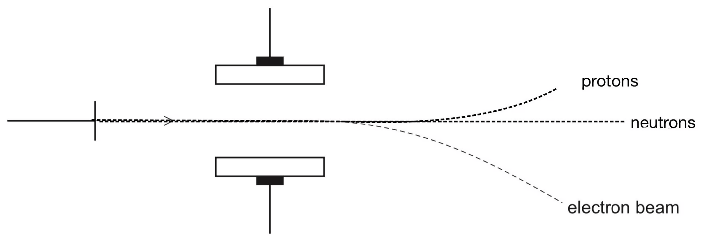
(a) Label the positive and negative plates. [1 mark]
(b) Complete the numbers of protons, neutrons and electrons in \(^{23}\ce{Na}\), \(^{32}\ce{S^{2-}}\) and \(^{86}\ce{Sr^{2+}}\). [3 marks]
(c) Write the electronic configuration of \(\ce{S^{2-}}\). [1 mark]
Show mark scheme / model answer
(a) Upper plate positive; lower plate negative. (b) \(^{23}\ce{Na}\): 11 p, 12 n, 11 e; \(^{32}\ce{S^{2-}}\): 16 p, 16 n, 18 e; \(^{86}\ce{Sr^{2+}}\): 38 p, 48 n, 36 e. (c) \(1s^2 2s^2 2p^6 3s^2 3p^6\).
1.1 Atomic Structure - Structured Questions: Medium
Example 4 · Atomic and nucleon numbers · 1.1 SQ Medium Q1
(a) Complete the table for atomic number 9, nucleon number 19, 10 electrons and for atomic number 13, nucleon number 27, 13 electrons. [2 marks]
(b) Give the symbol and full configuration of the potassium \(1+\) ion with nucleon number 39. [2 marks]
(c) Add and label the proton and neutron paths to the electron-beam diagram.
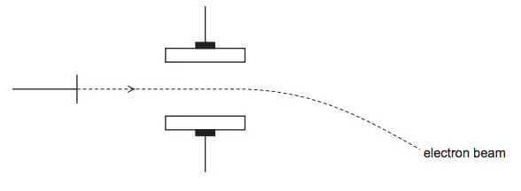
(d) The fifth to eighth ionisation energies of Y are 7012, 8496, 27107 and 31671 \(\mathrm{kJ\ mol^{-1}}\). State its group and explain the large jump. [1 mark]
Show mark scheme / model answer
- (a) \(^{19}_{9}\ce{F-}\): 9 p, 10 n; \(^{27}_{13}\ce{Al}\): 13 p, 14 n.
- (b) \(^{39}_{19}\ce{K+}\); \(1s^2 2s^2 2p^6 3s^2 3p^6\).
- (c) Neutrons pass straight through; protons bend towards the negative plate, less than electrons.
- (d) Group 16; the jump after the sixth electron shows that the seventh comes from an inner shell.
Example 5 · Gold atoms, isotopes and orbitals · 1.1 SQ Medium Q2
For an atom of \(^{197}_{79}\ce{Au}\):
(a) Give the relative mass, relative charge, location and total number of neutrons and electrons. [4 marks]
(b) Explain what is meant by isotopes and why a mixture of gold isotopes has the same chemical properties as a pure isotope. [3 marks]
(c) Complete chloride-ion box notation.
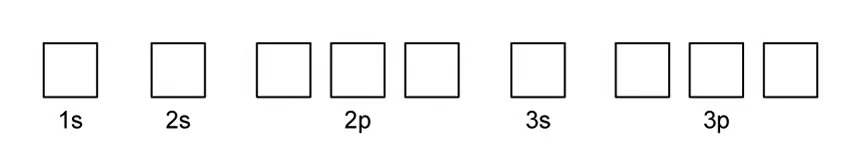
(d) Draw and label one \(s\) and one \(p\) orbital.
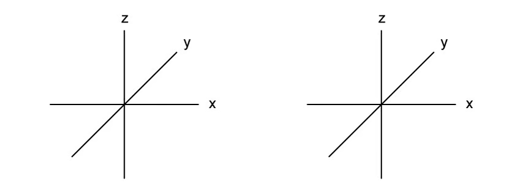
Show mark scheme / model answer
- (a) Neutron: mass 1, charge 0, nucleus, 118; electron: mass \(1/1836\), charge −1, outside nucleus, 79.
- (b) Same proton number but different neutron number; same electron configuration means same chemical properties.
- (c) \(\ce{Cl-}:1s^2 2s^2 2p^6 3s^2 3p^6\).
- (d) Spherical \(s\) and dumbbell-shaped \(p\) orbital.
Example 6 · First ionisation energy and Period 3 · 1.1 SQ Medium Q3
(a) Define first ionisation energy and write the equation for aluminium. [3 marks]
(b) Successive ionisation energies for Period 3 element A are 1912, 1904, 2914, 4964, 6274, 21268, 25431 and 29872 \(\mathrm{kJ\ mol^{-1}}\). Identify A and explain. [2 marks]
(c) Explain the general increase across Period 3 and the deviations in the trend.
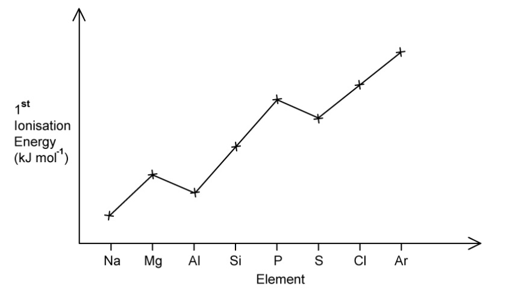
Show mark scheme / model answer
(a) Enthalpy needed to remove one mole of electrons from one mole of gaseous atoms to form gaseous \(1+\) ions: \(\ce{Al(g) -> Al+(g) + e-}\). (b) Phosphorus; the jump after the fifth electron shows five outer electrons. (c) Nuclear charge increases, shielding is similar and radius decreases. Al is lower because its electron is in higher-energy \(3p\); S is lower than P because of paired-electron repulsion in \(3p\).
1.1 Atomic Structure - Structured Questions: Hard
Example 7 · Periodic trends and successive ionisation · 1.1 SQ Hard Q1
Identify an element that fits each description: (i) forms a \(2-\) ion with the same configuration as Ne; (ii) Period 3 element with the highest boiling point; (iii) largest atomic radius in the first three periods; (iv) highest first ionisation energy; (v) Period 3 element with successive ionisation energies 738, 1451, 7733 and 10541 \(\mathrm{kJ\ mol^{-1}}\).
(b) Complete the first-ionisation-energy graph for G–K.
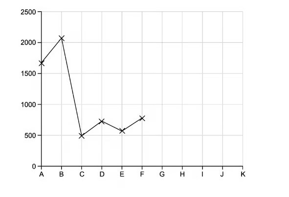
(c) Explain why the first ionisation energy of D is greater than that of C. [2 marks]
Show mark scheme / model answer
(a) (i) Oxygen; (ii) silicon; (iii) sodium; (iv) helium; (v) magnesium. (b) Continue the Period 3 pattern, including the Al and S dips. (c) The electrons are in the same subshell, but D has greater nuclear charge and attraction.
Example 8 · Oxygen shells and electron configurations · 1.1 SQ Hard Q2
Successive ionisation energies of oxygen are 1314, 3388, 5301, 7469, 10989, 13327, 71337 and 84080 \(\mathrm{kJ\ mol^{-1}}\).
(a) Give the equation for the third ionisation energy of oxygen. [2 marks]
(b) Explain how the data shows evidence of two energy shells. [2 marks]
(c) Give full configurations for Te, \(\ce{Zn^{2+}}\), \(\ce{Cu^{2+}}\), and give \(\ce{Zr^{2+}}\) starting with [Kr]. [4 marks]
Show mark scheme / model answer
(a) \(\ce{O^{2+}(g) -> O^{3+}(g) + e-}\). (b) The large jump between the sixth and seventh energies shows six outer electrons and then an inner-shell electron. (c) \(\ce{Te}:1s^2 2s^2 2p^6 3s^2 3p^6 4s^2 3d^{10} 4p^6 5s^2 4d^{10} 5p^4\); \(\ce{Zn^{2+}}:[Ar]3d^{10}\); \(\ce{Cu^{2+}}:[Ar]3d^9\); \(\ce{Zr^{2+}}=[Kr]4d^2\).
Example 9 · Period 2 radii and Group 2 · 1.1 SQ Hard Q4
| Element | Li | Be | B | C | N | O | F |
|---|---|---|---|---|---|---|---|
| Atomic radius / pm | 152 | 112 | 88 | 77 | 70 | 66 | 68 |
(a) Explain the variation in atomic radius. [4 marks]
(b) Explain why neon’s atomic radius cannot be measured in the same way. [2 marks]
(c) Complete the excited-state configuration of boron and explain why its first ionisation energy is lower than beryllium’s.

Show mark scheme / model answer
(a) Radius decreases across because nuclear charge increases while shielding is similar and electrons enter the same shell. (b) Neon is monatomic and does not form covalent or metallic bonds, so the usual radius definition does not apply. (c) Excited B is \(1s^2 2s^1 2p^2\); the \(2p\) electron is higher in energy and more shielded than Be’s \(2s\) electron.
Example 10 · Oxygen and carbon orbitals · 1.1 SQ Hard Q5
(a) Identify and draw the subshell containing the highest-energy occupied electrons in oxygen.

(b) Complete the excited-state configuration of carbon. [1 mark]
(c) Identify the hybridisation in carbon monoxide for both atoms and explain how it occurs. [4 marks]
Show mark scheme / model answer
(a) The highest occupied subshell is \(2p\), which is dumbbell-shaped. (b) \(1s^2 2s^1 2p^3\). (c) Both atoms use \(sp\) hybridisation: one \(s\) and one \(p\) orbital mix, leaving two unhybridised \(p\) orbitals to form two \(\pi\) bonds.